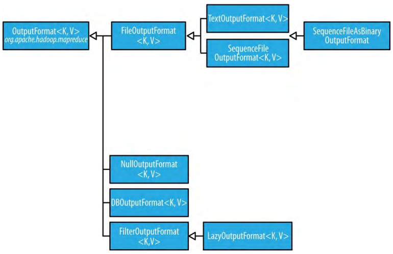

输出格式（Output Formats）
Hadoop有与输出格式相对应的输入格式。OutputFormat类层级如图 8-4:
图 8-4.OutputFormat class hierarchy

3.1、Text输出（Text Output）
默认输出格式，TextOutputFormat，把记录写作一行文本。键和值可以是任何类型，因为TextOutputFormat通过调用它们的toString()方法把它们转为字符串。每个键值对都用制表符分隔，分隔符可以通过mapreduce.output.textoutputformat.separator属性更改。对应于TextOutputFormat的输出读取的输入格式是KeyValueTextInputFormat，因为它可以根据配置的分隔符把行切分为键值对。
通过使用NullWritable类型，可以将TextOutputFormat输出的键或者值（或者键和值，使输出格式与NullOutputFormat等价，即没有任何输出）覆盖。这会导致输出行中没有分隔符，使得输出可以适用于TextInputFormat读取。
3.2、二进制输出（Binary Output）
3.2.1、SequenceFileOutputFormat
SequenceFileOutputFormat输出顺序文件。如果后续MapReduce job的输入是顺序文件，这是一个好的选择，因为它是紧凑且压缩的。压缩通过SequenceFileOutputFormat的静态方法（开启压缩、设置codec）控制。
3.2.2、SequenceFileAsBinaryOutputFormat
SequenceFileAsBinaryOutputFormat与SequenceFileAsBinaryInputFormat对应，将键和值以二进制格式写到顺序文件容器中。
3.2.3、MapFileOutputFormat
MapFileOutputFormat写map文件作为输出。MapFile中的键必须按序添加，所以要确保reducer按序输出键。注意：reduce输入键是保证是排序的（sorted），但是输出键是reduce函数控制的，在通用的MapReduce约定中并没有要求reduce输出键是以任何一种方式排序的。需要排序的输出的键的额外限制只是MapFileOutputFormat的需求。
3.3、Multiple Outputs
FileOutputFormat和它的子类会在输出目录生成一组文件。每个reduer一个文件，文件以分区号码命名：part-r-00000，part-r-00001，等等。有时需要控制输出文件的命名或者需要每个reducer产生多个文件，MultipleOutputs类，可以满足这些需求。
3.3.1、数据分区（An example：Partitioning data）
考虑一下按照气象站对气象数据集进行分区的问题。可以运行一个输出是每个气象站一个文件的job，每个文件包含那个气象站的所有记录。
一种实现方式是，每个气象站一个reducer。要这样实现，需要两样东西：第一样，写一个把相同气象站数据放进相同分区的分区器（partitioner）；第二样，把job的reducers的数量设置为气象站数量。partitioner可以类似如下：
public class StationPartitioner extends Partitioner<LongWritable, Text> {
private NcdcRecordParser parser = new NcdcRecordParser();
@Override
public int getPartition(LongWritable key, Text value, int numPartitions) {
parser.parse(value);
return getPartition(parser.getStationId());
}
private int getPartition(String stationId) {
...
}
}
getPartition(String)方法的实现没有写出，其功能是把气象站ID转换为分区索引。这样做，需要所有气象站IDs的集合，然后只需要返回集合中气象站ID的索引。
这种实现方式有两个缺点：第一个，job运行前要知道分区的数量，即要知道气象站的数量。但是，即使NCDC提供它的气象站的元数据，也无法保证气象数据中的气象站ID能够和元数据匹配。出现在元数据中，而没有出现在气象数据中的气象站会浪费一个reduce task。更糟糕的是，气象数据中有的气象站没有出现在元数据中因为无法获得reduce task，对应数据将会被抛弃。可以写个job来获取数据中的气象站IDs，但是这样做就shame了。第二个，由应用来全权决定分区的数量通常不是个好的想法，因为会导致小的或不平均的分区。使用大量处理少量数据的redecer不是组织job的高效方式，最好是使用较少的作处理大量数据的reducers，这样能减少运行tasks的开销。不平均的分区也很难避免，不同气象站收集的数据量可能有很大波动；例如，一个刚建立的气象站的数据和一个已经设立一个世纪的气象站的数据相比。如果某些个reduce tasks运行时间显著比其它长，它们会主导job执行时间并导致job运行时间比需要的更长。
注意：有两个允许应用设置分区数量（等价于设置reducers数量）的特殊场景：0个reducers，没有分区，应用只需要运行map tasks；1个reducer，运行小的jobs以把之前jobs的输出合并为一个文件是很便利的，只有在数据量足够小能够被一个reducer舒服地处理时才可以尝试使用1个reducer。
更好的方式是让集群控制一个job的分区数量，这个方式的思路是，有越多的可用集群资源，job完成的越快。这也是HashPartitioner运行结果好的原因：它可以使用任意数量的分区运行，并且能够确保每个分区的键搭配良好，从而使分区大小比较均衡。但是，如果使用HashPartitioner，每个分区就会包含多个站点，所以为了每个站点一个文件，需要让每个reducer去写多个文件。这就是MultipleOutputs的作用。
3.3.2、MultipleOutputs
MultipleOutputs可以将数据写到名称派生子输出键和值的文件，或者写到任意名称的文件。它允许每个reducer（或者只有mapper的job的mapper）创建超过一个文件。其创建的map输出的文件名格式为name-m-nnnnn、reduce输出文件名格式为name-r-nnnnn，其中name是程序设置的任意名称、nnnnn是从00000开始的代表part号（part number）的整数。part号确保来自不同分区（mapper或者reducer）的同名输出不冲突。
例8-5展示了如何用MultipleOutputs来按照气象站分区数据集。
例 8-5. Partitioning whole dataset into files named by the station ID using MultipleOutputs
public class PartitionByStationUsingMultipleOutputs extends Configured
implements Tool {
static class StationMapper
extends Mapper<LongWritable, Text, Text, Text> {
private NcdcRecordParser parser = new NcdcRecordParser();
@Override
protected void map(LongWritable key, Text value, Context context)
throws IOException, InterruptedException {
parser.parse(value);
context.write(new Text(parser.getStationId()), value);
}
}
static class MultipleOutputsReducer
extends Reducer<Text, Text, NullWritable, Text> {
private MultipleOutputs<NullWritable, Text> multipleOutputs;
@Override
protected void setup(Context context)
throws IOException, InterruptedException {
multipleOutputs = new MultipleOutputs<NullWritable, Text>(context);
}
@Override
protected void reduce(Text key, Iterable<Text> values, Context context)
throws IOException, InterruptedException {
for (Text value : values) {
multipleOutputs.write(NullWritable.get(), value, key.toString());
}
}
@Override
protected void cleanup(Context context)
throws IOException, InterruptedException {
multipleOutputs.close();
}
}
@Override
public int run(String[] args) throws Exception {
Job job = JobBuilder.parseInputAndOutput(this, getConf(), args);
if (job == null) {
return -1;
}
job.setMapperClass(StationMapper.class);
job.setMapOutputKeyClass(Text.class);
job.setReducerClass(MultipleOutputsReducer.class);
job.setOutputKeyClass(NullWritable.class);
return job.waitForCompletion(true) ? 0 : 1;
}
public static void main(String[] args) throws Exception {
int exitCode = ToolRunner.run(new PartitionByStationUsingMultipleOutputs(),
args);
System.exit(exitCode);
}
}
在reducer中，即产生输出的地方，在setup(Context context)方法中构建了一个MultipleOutputs实例，并把它赋值给实例变量。然后，在reduce()方法中使用MultipleOutputs实例代替context写到输出。MultipleOutputs的write()方法使用键、值、文件名称作为参数。可以使用气象站ID作为名称，所以全局结果是产生了名称格式为station_identifier-r-nnnnn的输出文件。产生的部分输出文件如下：
output/010010-99999-r-00027
output/010050-99999-r-00013
output/010100-99999-r-00015
output/010280-99999-r-00014
output/010550-99999-r-00000
output/010980-99999-r-00011
output/011060-99999-r-00025
output/012030-99999-r-00029
output/012350-99999-r-00018
output/012620-99999-r-00004
MultipleOutputs的write()方法中指定的基本路径会被当作为输出目录内的相对路径，因为路径可能包含分隔符（/），所以可能会创建任意深度的子目录。例如，如下修改用气象站和年份分区数据，所以每年的数据都包含在名为气象站ID的目录中（例如029070-99999/1901/part-r-00000）。
@Override
protected void reduce(Text key, Iterable<Text> values, Context context)
throws IOException, InterruptedException {
for (Text value : values) {
parser.parse(value);
String basePath = String.format("%s/%s/part",
parser.getStationId(), parser.getYear());
multipleOutputs.write(NullWritable.get(), value, basePath);
}
}
MultipleOutputs委托mapper的OutputFormat。在这个例子里，是TextOutputFormat，也可以是其它复杂的设置。例如，可以创建命名的输出，每个都有它自己的OutputFormat和键、值类型（可能因mapper或reducer输出类型的不同而不同）。另外，mapper或（或者，和）reducer可以将处理的每条记录写到多个输出文件。
3.4、Lazy Output
FileOutputFormat子类会创建输出文件（part-r-nnnnn），即使是空的。某些应用希望补创建空的文件，此时可以使用LazyOutputFormat。它是一个包装（wrapper）输出格式，它确保只有从对应的分区获取第一条记录时创建输出文件。使用时，与JobConf和底层的输出格式一起调用它的setOutputFormatClass()方法。流支持通过-lazyOutput选项开启LazyOutputFormat。
3.5、Database Output
Database Input章节已经描述过，略。